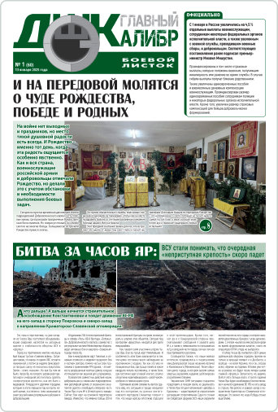

корпус

Корпусное печатное издание «Главный Калибр»

Читайте в номере:
- «Добиваться мира через силу». Кандидат на пост главы Пентагона раскрыл позицию Трампа по Украине
- ВСУ ударили по России ATACMS и Storm Shadow. Две ракеты перехватили над Черным морем
- Разведка Украины хотела «купить» Горловку у российских военных. Сколько им предлагали за уход из города?
- Российским войскам осталось несколько километров до Днепропетровской области
- Российского посла вызвали в МИД Армении после выпуска новостей с Дмитрием Киселевым. Что возмутило Ереван?
- Российским войскам осталось несколько километров до Днепропетровской области
- Российского посла вызвали в МИД Армении после выпуска новостей с Дмитрием Киселевым. Что возмутило Ереван?
- Российского посла вызвали в МИД Армении после выпуска новостей с Дмитрием Киселевым. Что возмутило Ереван?
- Российского посла вызвали в МИД Армении после выпуска новостей с Дмитрием Киселевым. Что возмутило Ереван?
Прошлые выпуски
Боевой листок №1 (61)
